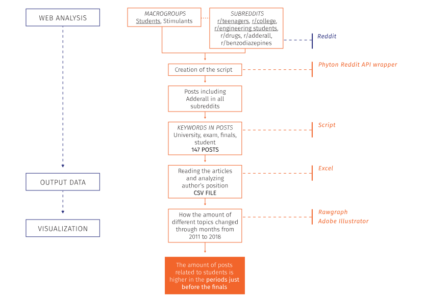

Description
The bumpchart visualization shows off how the amount of different topics related to the posts collected about Adderall and students on Reddit changed through the months from 2011 to 2018. By hovering on the different shapes the user can highlight the different topic. It’s interesting to see that the amount of posts about “Need for exam” is higher in the periods close to the finals.
This protocol started with choose of two macro groups: Students and Stimulants. Than subreddits like drugs, adderall, teenagers, college, engineering students and benzodiazepines were selected. With the help of PRAW library plus Phyton Reddit API wrapper, the script to search within the refined specific categories on Reddit was created. Posts including “Adderall” in first 1000 results of “students” subreddits and Posts including “student”, “exam”, “finals” in first 1000 results of Stimulants subreddits were collected. After this step 147 results were selected thank to the scraping in subreddits that contain keywords like University, exam, finals and students. With a specific analysis of all of them it has been recognized the posting date and the position of the author, which influenced the further categorization. The dataset then was uploaded on Rawgraph that gave the draft of the visualization then refined in Adobe Illustrator. The final outcome showcases that the amount of posts escalates before the finals exams period.
Protocol

Data
Data Source: Reddit
Timestamp: Jan 2011-Nov 2018
View Data (60Kb)
Trying to find the communities closer to students and drugs on Reddit, firstly it were done a research on the platform to find those subreddit, that at the end were six. Thanks to a script wrote using a library to work with Reddit API was possible to filter more all of the posts inside the subreddits to find those were talking about Adderall and were containing different key words referred to academic world. From the Phyton Script were taken titles, dates, links, scores, number of comments of the posts, that after were manually categorized to find different groups of topic. In particular for this visualization dates were divided to have a different group of posts for every month, without looking at the day and the year.